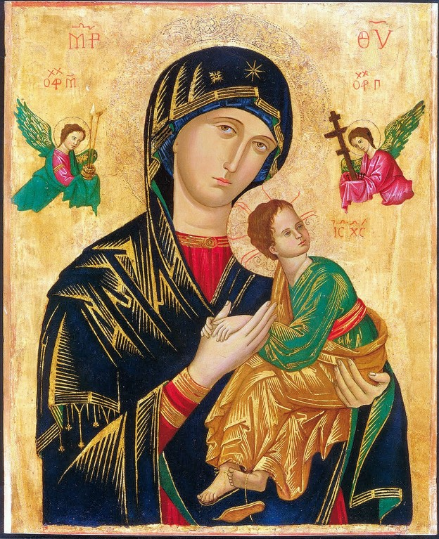

好 good, excellent, fine; well; proper;
女 woman, girl; 子 child, son
definiton from Chinese dictionary
Dictionary Reference
[Mar 10:17-18 KJV] And when he was gone forth into the way, there came one running, and kneeled to him, and asked him, Good Master, what shall I do that I may inherit eternal life? And Jesus said unto him, Why me do you call good? [there is] none good but One God. "You know the commandments: 'Do not commit adultery,' 'Do not murder,' 'Do not steal,' 'Do not bear false witness,' 'Do not defraud,' 'Honor your father and mother.' "
